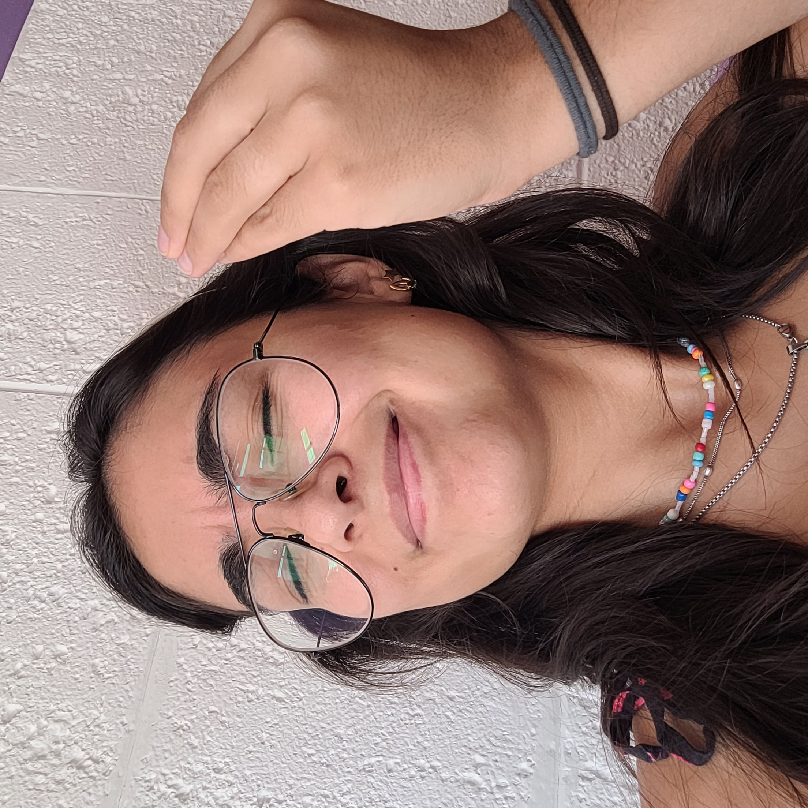
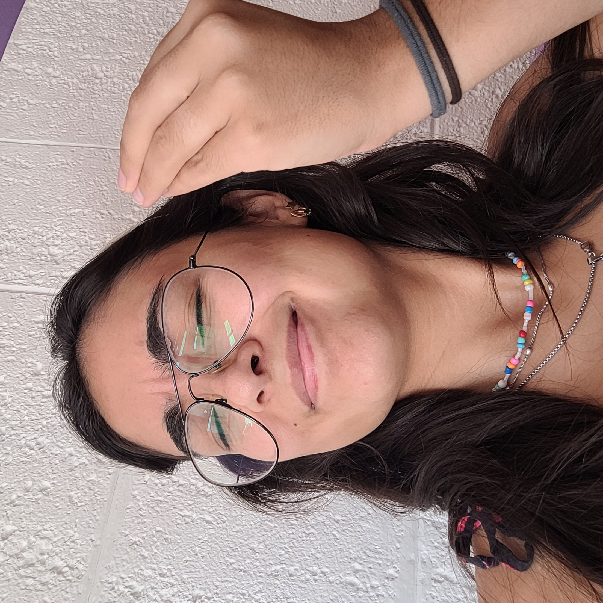

Brunito
¡Feliz día de San Valentin!
Como sabes, estuve estudiando mucho para crear una página web desde cero. Todo esto surgió por emocionarme tanto con el proyecto Oak Tree que, al final, lo convertí en uno propio. Pero, a pesar de que la razón de ser de todo este esfuerzo sea crear el mejor campus estudiantil del mundo mundial, no implica que no me pueda divertir un poquito.
Sin más preámbulos, te presento mi primer página web.
Es un regalo para vos porque todo este desarrollo es por la fe que siempre depositas, por estar siempre a mi lado y, además, por sacar lo mejor de mi. Por todo eso y muchísimo más, gracias.
Te amo con todo mi corazón.
¿Qué anduviste haciendo Melcita?
Arranquemo' nomas
Te cuento desde el inicio.
Al principio no sabía por donde comenzar a programar, asi que, elegí el modelo más básico y simple posible. El mismo consiste en un título principal (o mejor dicho: encabezado) y un botón completamente inútil (al hacerle click no pasaba nada jajajaj), pero al menos lo podía personalizar con una pequeña descripción.
Ladrillito sobre ladrillito
Mi primer paso consistió en conocer el lenguaje HTML. Resulta que no es un lenguaje de programación, sino más bien, es un lenguaje de marcado el cual se interpreta. La verdad es que no tiene mucha ciencia. Cualquier persona que sepa usar una compu puede aprenderlo. Lo prometo. (No es como esas veces que digo que es fácil pero, en realidad, no lo es).
Lo que caracteriza al lenguaje es la simpleza porque lo que escribís, literalmente, se visualiza en pantalla de manera instantánea. No hay que optimizar algoritmos o debbugear. En el mundo de HTML la vida es bella.
Otra razón por la cual HTML es fácil es porque se define como una herramienta pensada para estructurar una web. Pensalo como un arquitecto que diseña un plano. En este paso se decide donde van colocadas las paredes, columnas y aberturas, entre otros elementos.
Así como en un plano no importa de qué color serán las cortinas, en HTML no importa la tipografía o el color del background. Por esta razón, lamentablemente, se obtienen resultados muy feos.
 

Pintemos la carita
Bueno, hasta ahora es todo bastante feo.
Pero una vez que ya conozco lo básico de HTML, puedo emprender en el mundo de la personalización. Para lograrlo necesito conocer y aprender un nuevo lenguaje.
CSS es un lenguaje que permite seleccionar colores, la posición de los diferentes elementos de la página, el orden de aparición de los mismos, etc. Resulta que a la gente le encanta hacer boludeces lindas y grabar tutoriales que, a posteriori, suben a youtube (aún no vi ninguno xd), por lo tanto no habría ausencia de información.
En mi caso, como soy una nerd total, estuve leyendo sobre el lenguaje y sus fundamentos. En este punto no estaba preparada para entrar al mundo piola, interactivo, en el que la vida es genial, peeeeero, Paolo puede convertir esto y esto en una princesa.
incredibol
Como notaste ya comenzamos a jugar en otras ligas, pero nos queda muuuuuuucho camino por delante.
Lo primero que visualizamos en el ejemplo anterior es que no hay una estructura definida. Con estructura me refiero a que, si bien contamos con un titulo, una lista, e incluso, una caja para completar, todo se encuentra apilado y da una "sensación" de desorden. Es necesario ponernos en rol de decoradores de interiores e intentar agregar una barra de navegación horizontal, mejorar los títulos dandole la importancia que merecen y delimitar correctamente los párrafos.
Llegados a este punto, estaría buenísimo cambiar la tipografía, elegir una paleta de colores piola (quizás la de shacing clu?), y armar una presentación medianamente legible y armoniosa.
Ojito al piojito
Vamooooo, que esto, de a poquito, toma forma neneeeeee.
Ahora ya tenemos una pagina web con los elementos necesarios de navegación.
Lo cierto es que este último resultado no está nada mal, pero tu novia nunca se conforma y ella siempre busca superarse (una hincha huevos).
Por lo tanto, no conforme con el resultado comencé mi laburito de investigación. Vos me conoces, y sabes que tengo mi lado artístico. Me encanta crear cositas aesthetic y divertidas.
Lo único que me separaba de mi resultado deseado era algo imposible de imaginar: un nuevo lenguaje.
Creciendo a pasos super grandotes
a la miércoles!
La IA existe hace muchísimos años, pero es increíble el poder de computo que maneja. Para este tipo de programación es demasiado útil y sería un pecado no aprovecharla (tampoco me gusta andar perdiendo el tiempo). Por lo tanto, la IA se convirtió en mi mejor aliada para el aprendizaje de javascript.
La verdad, a mi ya no me interesaba aprender tanto sobre los fundamentos del lenguaje, sino mas bien la forma correcta de aplicarlos. Y como el tiempo apremiaba, conocí este nuevo lenguaje en tiempo record.
Javascript es un lenguaje de programación interpretado. No voy a entrar en detalle pero lo único que voy a decir es que, para este lenguaje, sí es útil (por no decir necesario) saber sobre lógica de programación.
Fiuuuummmba
Javascript es el lenguaje que permite animar los elementos que están en la página web. Hay un montón de animaciones posibles, solo se requiere un poquito de creatividad y ganas de romperse la cabeza un cachito. Pero nada muy terrrible eeee.
Para demostrarte las cosas divertidas que se pueden hacer, se me ocurrió armar un pequeño laboratorio experimental.
Desarrollar dicho laboratorio requiere aprender a trabajar con "contenedores" (son como una especie de cajas) donde cada objeto contenido ejecuta la acción especificada. Una vez que se entiende esta lógica, dan ganas de crear miles de cajitas logrando que todo lo que esté en la web sea interactivo. Acá ya me podes imaginar gritando de emoción.
Para que la página en sí no explote me contuve bastante, peeeeero, tampoco me porté tan bien.
Laboratorio: Test de amorchito
ojitos para vigilar lo que haces
Mové la barra
Y colorin colorado....
Ya no me queda mucho más para contarte. Usar la IA, buscar la información en google y sentarme horas para elegir la foto más fachera o la transición más aesthetic o, incluso, el colorcito exacto de una camiseta de Racing Clu, dió como resultado la página que estas navegando en este momento.
Todo este viaje fue muy divertido para mi. El desarrollo web es un mar gigantezco en el que recién empecé a mojar las patas, pero la verdad estoy contenta de todo lo que pude aprender y crear para vos.
Hasta acá llegó el desarrollo personal de la Mel. Con gusto puedo compartirte más detalles técnicos en persona (guiño guiño).
Todo fue creado con el mayor amor del mundo (y con risas solitarias que largué al escribir mis propias macanas).
.
Te amo bomboncito.